Chapter 9 SQL과 MACRO
Structured Query Language (SQL)은 테이블에서 자료를 조회하고 자료를 입력, 수정, 삭제하며 테이블, 뷰, 인덱스를 생성, 삭제하는데 널리 사용되는 표준화된 언어이며, 데이터베이스를 관리하는데 유용하게 사용된다. SAS에서는 SQL의 기본기능을 SQL Procedure (Proc SQL)로 제공하여 데이터셋 관리의 편리함을 더하고 있다.
9.1 PROC SQL 기본 구조
SQL Procedure를 실행하기 위한 기본 형식은 다음과 같다.
PROC SQL;
CREATE TABLE 라이브러리.새로운데이터셋명 AS
SELECT 변수1, 변수2, 변수3, ...
FROM 라이브러리.데이터셋 AS A, 라이브러리.데이터셋 AS B ...
WHERE (ON) 조건1 AND/OR 조건2 ...
GROUP BY 변수1, 변수2, ...
ORDER BY 변수1, 변수2, ...;
QUIT;SAS에서 SQL Procedure는 PROC SQL;로 시작하고 QUIT;로 끝을 낸다. CREATE TABE 데이터셋명 AS에는 새로 생성하고자 하는 데이터셋 이름을 적어준다. SELECT 구문은 데이터셋에 선택하고자 하는 변수 혹은 새로 생성하려는 변수를 지정한다. 따라서 DATA Step에서 keep구문 또는 새로운 변수 생성과 관련이 있다. FROM 구문은 새로운 데이터셋을 구성하는데 참조하는 데이터셋 이름을 적어준다. 이는 DATA Step의 SET 구문과 같은 역할을 한다. WHERE (ON) 구문은 데이터셋 구성시 필요한 조건을 지정하며 DATA Step에서 IF문 또는 WHERE 문과 같은 역할을 한다. GROUP BY 문에는 그룹화된 데이터셋을 생성 시 그룹화할 기준 변수를 지정한다. GROUP BY 문은 건강보험청구자료와 같이 한 ID에 여러 개의 행이 존재하는 경우 유니크한 ID 별로 값을 산출해주기 때문에 ID 별로 계산을 해야 하는 경우에 유용하게 사용된다. ORDER BY 문은 데이터셋을 정렬해서 표현하고 싶을 때 정렬 기준 변수를 지정한다. 이는 SORT Procedure와 같은 기능을 한다. 이와 같이 SQL Procedure는 하나의 Procedure에 여러 가지 명령의 수행이 가능한 옵션들로 구성되어 있으며 상황에 맞게 구성하여 사용한다.
9.2 단일 데이터셋 다루기
SQL Procedure는 CREATE TABLE, SELECT, FROM, WHERE, GROUP BY, ORDER BY 옵션의 조합으로 상황에 맞게 명령어가 구성된다. 이번 장에서는 단일 데이터셋을 이용하여 데이터셋 생성, 변수 생성, 조건문 적용 등과 관련하여 살펴보자. 먼저 조건문에서와 마찬가지로 BB.T20 데이터셋에서 주상병이 제2형 당뇨(‘E11’)이면서 동시에 내과 진료과목이 기재된 명세서만 추출하여 BB.T20_SQL 데이터셋을 생성해보자. 이때 진료과목코드(MCARE_SUBJ_CD)의 값이 ‘01’이면 내과를 의미한다. 이를 위한 프로그램은 다음과 같다.
proc sql;
create table bb.t20_sql as
select *
from bb.t20
where substr(sick_sym1,1,3)='E11' and mcare_subj_cd='01';
quit;
proc print data=bb.t20_sql (obs=10); run;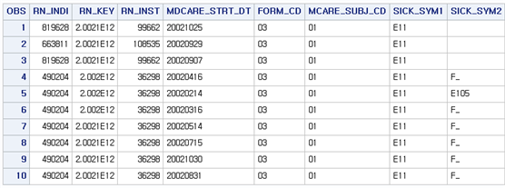
SELECT문 다음에 ‘*’는 모든 변수를 의미한다, 따라서 결과를 살펴보면 누락된 변수 없이 모든 변수가 남아있는 것을 알 수 있다. 특정 변수를 추출하고 싶으면 변수1, 변수2, … 와 같은 형식으로 지정한다. 동일한 조건에서 특정변수만 남겨보자. 이때 개인고유번호(RN_INDI), 요양개시일자(MDCARE_STRT_DT), 주상병(SICK_SYM1), 심결요양급여비용총액(ED_RC_TOT_AMT)를 남겨서 BB.T20_SQL2를 만들어보자. 이를 위한 프로그램은 다음과 같다.
proc sql;
create table bb.t20_sql2 as
select rn_indi, mdcare_strt_dt, sick_sym1, ed_rc_tot_amt
from bb.t20
where substr(sick_sym1,1,3)='E11' and mcare_subj_cd='01';
quit;
proc print data=bb.t20_sql2 (obs=10); run;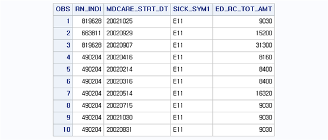
DATA step에서는 변수와 변수 사이, 데이터셋과 데이터셋 사이는 공백으로 분리를 하였으나 SQL은 ‘,’로 구분해줘야 한다. 다음은 BB.T20_SQL2를 생성하는 동일한 프로그램에 변수간 계산을 통한 새로운 변수생성을 추가해보자. 이때 새로운 변수는 심결본인부담금(EDC_SBA)과 심결보험자부담금(EDC_INSUR_BRDN_AMT)을 합하여 TOTALCOST란 변수명으로 지정하고 BB.T20_SQL3 데이터셋을 생성해보자. 이를 위한 프로그램은 다음과 같다.
proc sql;
create table bb.t20_sql3 as
select rn_indi, mdcare_strt_dt, sick_sym1, ed_rc_tot_amt, sum(edc_sba, edc_insur_brdn_amt) as totalcost
from bb.t20
where substr(sick_sym1,1,3)='E11' and mcare_subj_cd='01';
quit;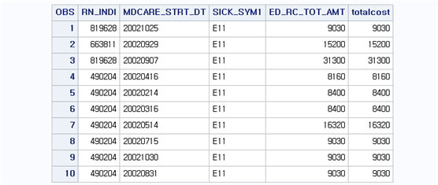
결과를 살펴보면 심결본인부담금(EDC_SBA)과 심결보험자부담금(EDC_INSUR_BRDN_AMT)을 합한 TOTALCOST는 심결요양급여비용총액(ED_RC_TOT_AMT)와 같은 값을 가짐을 알 수 있다. 이때 새로운 변수 생성을 위해 SUM 함수를 이용하였고 이 결과를 TOTALCOST로 저장하기 위해 AS 구문을 추가하였다. 즉 [함수식 AS 변수명] 옵션을 주면 함수식으로 계산된 결과가 AS 뒤의 변수명으로 저장된다. ‘AS 변수명‘을 주지 않으면 자동으로 변수명을 만들어서 제공한다.
이와 같은 결과는 하나의 데이터셋 문에서 KEEP, IF, 변수 생성 구문을 동시에 사용한 것과 같은 결과를 보여준다. 이번에는 GROUP BY 구문에 대해서 살펴보자. GROUP BY 구문은 그룹화되어 있는 개체들을 하나로 묶어서 결과를 제공해준다. 이때 연산은 행 내에서 진행되는 것이 아닌 그룹 변수 열 내에서 연산이 진행된다. 예를 들어 심결본인부담금(EDC_SBA)과 심결보험자부담금(EDC_INSUR_BRDN_AMT)의 합을 계산하면, 특정 개체에서 심결본인부담금+심결보험자부담금의 형태로 행 내에서 열+열의 형태로 계산된다. 이에 반해 GROUP BY는 특정 열 내에서 행들의 묶음으로 계산이 진행된다. 예를 들어, 위의 결과에서 개인고유번호별로 즉, 환자별로 심결요양급여비용총액을 계산하고 싶다고 하자. 이때 RN_INDI가 ’490204‘인 경우 총 7개의 개체(=명세서)가 존재하여 ’490204‘인 환자에 대해 총 심결요양급여비용총액을 계산하면 심결요양급여비용총액을 나타내는 열 내에서 6개의 행들의 합으로 계산이 나타난다. BB.T20_SQL과 같은 조건에서 개인고유번호 별로 심결요양급여비용총액을 합하여 변수 TOTALCOST로 나타내고 BB.T20_SQL4로 저장해보자. 이를 위한 프로그램은 다음과 같다.
proc sql;
create table bb.t20_sql4 as
select distinct rn_indi, sum(ed_rc_tot_amt) as totalcost
from bb.t20
where substr(sick_sym1,1,3)='E11' and mcare_subj_cd='01'
group by rn_indi;
quit;
proc print data=bb.t20_sql4 (obs=10); run;결과를 살펴보면, 중복되지 않은 개인고유번호에 대해 심결요양급여비용총액을 합하여 TOTALCOST 변수로 표현하고 있는 것을 알 수 있다. 이때 새로 삽입된 코드를 살펴보면, SELECT 구문에 DISTINCT가 추가되었다. 이 옵션은 중복되지 않은 유일한 값을 나타내라는 의미이다. 중복된 값이 포함되어 자료의 오염을 막으려면 되도록 GROUP BY와 DISTINCT는 같이 사용하는 것이 좋다. 위의 예제에서는 RN_INDI와 TOTALCOST 변수만 남겼지만, 이 외에 다른 변수를 남길 때도 자료의 중복이 이루어지지 않는지 반드시 살펴봐야 한다. 예를 들어 요양개시일자(MDCARE_STRT_DT)를 추가해서 남기면 다음과 같은 결과를 보여준다.
proc sql;
create table bb.t20_sql5 as
select distinct rn_indi, mdcare_strt_dt, sum(ed_rc_tot_amt) as totalcost
from bb.t20
where substr(sick_sym1,1,3)='E11' and mcare_subj_cd='01'
group by rn_indi;
quit;
proc print data=bb.t20_sql5 (obs=10); run;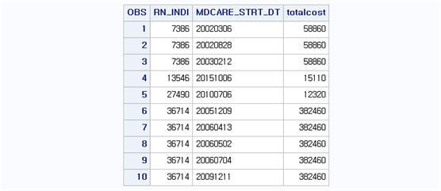
결과를 살펴보면, TOTALCOST 값은 RN_INDI별로 잘 계산이 되었지만 이를 표현하는 데 있어. 기준이 되는 변수인 RN_INDI내에서 MDCARE_STRT_DT가 여러 개의 값을 가지기 때문에 이를 모두 표현해주기 위해 MDCARE_STRT_DT개수 만큼 TOTALCOST가 중복 표현된다는 것을 알 수 있다. 따라서 분석에 필요한 것이 유일한 개체에 해당하는 변수 값이라면 이와 같은 중복으로 만들어지는 개체로 인해서 최종 결과물이 오염되지 않도록 조심하여야 한다. SQL에서 변수 생성을 위해 주로 사용하는 함수는 다음과 같다. 이 외에도 SAS에서 사용하는 대부분의 함수를 사용할 수 있다.
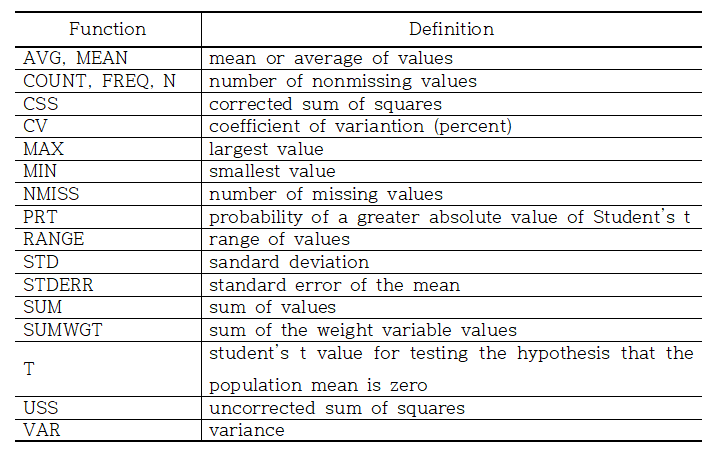
9.3 여러 데이터셋 다루기
SQL Procedure를 이용하여 여러 데이터셋을 합치거나, 다른 데이터셋과 연계하여 특정한 조건의 데이터셋 만을 뽑아내는 것이 가능하다. 이러한 기능은 DATA Step에서 데이터셋을 합치는 SET문과 MERGE를 섞어놓은 형태이며, 사실상 그보다는 더 많은 형태로 활용할 수 있다. 기능 면에서 SQL Procedure를 이용하는 방법은 다음과 같이 크게 4가지 형태로 나뉜다. 1) 여러 데이터셋에서 동일한 ID만을 매칭시켜 데이터셋을 생성하는 INNER JOIN 2) 기준 데이터셋을 왼쪽에 두고 다른 데이터셋에서 동일한 ID에 해당하는 개체의 변수값을 통합하는 LEFT JOIN 3) LEFT JOIN과는 반대로 동일한 ID에 해당하는 개체의 변수값을 오른쪽 기준 데이터셋으로 통합하는 RIGHT JOIN 4) 모든 데이터셋의 개체와 변수를 동일 ID를 기준으로 통합하는 OUTER JOIN으로 나뉜다. 이 중에서 LEFT JOIN과 RIGHT JOIN은 기능상 같은 역할을 하며, OUTER JOIN은 기능상 MERGE 문을 이용하는 게 편하기 때문에 여기서는 INNER JOIN과 LEFT JOIN에 대해서 살펴보도록 하자.
INNER JOIN은 각 데이터셋에 기준 ID를 통해 공통적으로 존재하는 개체(행)만 선택하여 데이터셋을 구성하는 방법이다. 이를 개체 입장에서 표현하면 다음 그림과 같다.
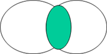
INNER JOIN 예제를 위해 앞 장에서 사용한 BB.T20_SQL 예제를 불러오자. BB.T20 데이터셋에서 주상병이 제2형 당뇨(‘E11’)이면서 동시에 내과 진료과목이 기재된 명세서만 추출하여 BB.T20_SQL 데이터셋을 생성하자. 이때 진료과목코드(MCARE_SUBJ_CD)의 값이 ‘01’이면 내과를 의미한다. 이를 위한 프로그램은 다음과 같다.
proc sql;
create table bb.t20_sql as
select *
from bb.t20
where substr(sick_sym1,1,3)='E11' and mcare_subj_cd='01'
quit;
proc print data=bb.t20_sql (obs=10);
format rn_key 15.; run;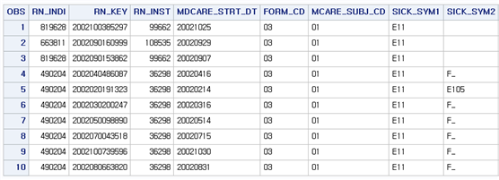
생성된 데이터셋 BB.T20_SQL은 10개의 개체와 BB.T20 데이터셋에 존재하는 모든 변수로 구성되어 있다. 첫번째 예제는 BB.T20_SQL과 동일한 청구고유번호(RN_KEY)를 가지는 BB.T40 데이터셋을 선택구성하는 방법이다. 다시 말해서, 기준이 되는 데이터셋을 기본으로 나머지 데이터셋의 구성을 바꾸는 형태이다. 먼저 BB.T40 데이터셋에서 BB.T20_SQL 데이터셋에 존재하는 RN_KEY와 같은 개체만 남기고 변수는 모두 선택하여 BB.T40_SQL 데이터셋을 구성하는 방법을 살펴보자. 이를 위한 프로그램은 다음과 같다.
proc sql;
create table bb.t40_sql as
select b.*
from bb.t20_sql as a, bb.t40 as b
where a.rn_key=b.rn_key;
quit;
proc print data=bb.t40_sql;
format rn_key 15.;
run;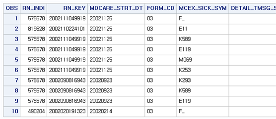
결과를 살펴보면, BB.T40 데이터셋의 모든 변수가 포함되어 있다는 것을 알 수 있다. RN_KEY 값이 ‘2002111049919’인 경우 BB.T40 데이터셋엔 네 개의 개체가 존재하기 때문에 모두 달라 붙어 구성된다. 여기서 프로그램을 살펴보면, FROM 구문에서 [BB.T20_SQL AS A, BB.T40 AS B]는 BB.T20_SQL은 간단히 A라는 이름으로 인식하고 BB.T40은 B라는 이름으로 인식하라는 의미이다. 또한, 두 데이터셋을 구분할 때는 ‘,’로 구분하고 있음을 알 수 있다. 이때 조건은 WHERE 구문을 이용하여 [A.RN_KEY=B.RN_KEY]를 통해 A 즉, BB.T20_SQL의 RN_KEY와 B 즉, BB.T40의 RN_KEY가 동일하다는 의미로 둔다. 여기서 ‘A.변수’와 ‘B.변수’는 A 또는 B 라이브러리를 의미하는 것이 아니라 FROM 구문에서 지정한 데이터셋의 의미임을 구분해야 한다. 마찬가지로 변수의 구성을 의미하는 SELECT 구문에서는 [B.*]으로, B 데이터셋 즉, BB.T40 데이터셋의 모든 변수를 의미하게 된다. INNER JOIN은 다음과 같은 방법으로도 사용 가능하다.
proc sql;
create table bb.t40_sql_in as
select b.*
from bb.t20_sql as a inner join bb.t40 as b
on a.rn_key=b.rn_key;
quit;
proc print data=bb.t40_sql_in;
format rn_key 15.;
run;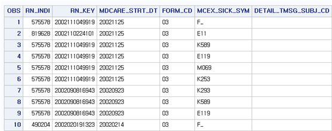
두 프로그램의 결과가 같다는 것을 알 수 있다. 이때 프로그램에서 차이점은 FROM 구문에서 두 데이터셋의 구분을 ‘.’에서 ‘INNER JOIN’으로 바뀌고 ‘WHERE’ 구문이 ‘ON’ 구문으로 바뀐 것이다. 두 프로그램은 항상 같은 결과를 보이므로 사용하기 편한 형태를 선택해서 사용하면 된다. 이번에는 BB.T40 데이터셋의 모든 변수가 아니라 필요한 변수만 생성하는 방법을 살펴보자. 예를 들어 RN_KEY와 MDCARE_STRT_DT, FORM_CD 변수만 남겨서 BB.T40_SQL2를 생성시켜보자. 이를 위한 프로그램은 다음과 같다.
proc sql;
create table bb.t40_sql2 as
select b.rn_key, b.mdcare_strt_dt, b.form_cd
from bb.t20_sql as a, bb.t40 as b
where a.rn_key=b.rn_key;
quit;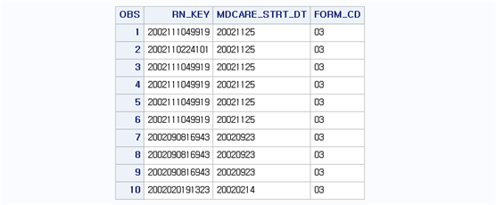
원하는 변수만 남기고 싶을때는 SELECT 구문에서 해당 데이터셋의 변수 이름을 나열하면 된다. 여기서는 [B.RN_KEY, B.MDCARE_STRT_DT, B.FORM_CD]로, B로 지정된 데이터셋의 변수이름을 ‘,’로 구분하여 지정하였다.
다음으로 BB.T20_SQL 데이터셋과 BB.T40 데이터셋에 존재하는 변수를 조절하는 법을 살펴보자. 이때 변수는 SELECT 구문에서 조절하기 때문에 SELECT 구문에서 필요한 변수를 각 데이터셋에서 불러오기만 하면 된다. 예를 들어, BB.T20_SQL 데이터셋에서 RN_KEY, ED_RC_TOT_AMT 변수를 남기고 BB.T40 데이터셋에서 RN_KEY, MDCARE_STRT_DT, MCEX_SICK_SYM 변수를 남겨서 BB.T2040_SQL 데이터셋을 생성해보자. 이를 위한 프로그램은 다음과 같다.
proc sql;
create table bb.t40_sql3 as
select a.rn_key, a.ed_rc_tot_amt, b.rn_key, b.mdcare_strt_dt, b.mcex_sick_sym
from bb.t20_sql as a, bb.t40 as b
where a.rn_key=b.rn_key;
quit;
proc print data=bb.t40_sql3;
format rn_key 15.;
run;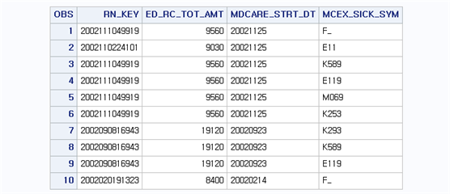
결과를 살펴보면 원하는 변수로 구성된 것을 알 수 있다. 이때 BB.T20_SQL은 RN_KEY 값이 ‘2002111049919’인 경우 한 개체만 존재하고 BB.T40에는 네 개의 개체가 존재한다. 따라서 BB.T20_SQL에서 불러온 Ed_RC_TOT_AMT의 경우 MERGE 문과 마찬가지로 자기 자신의 값을 복제하여 부족한 값을 채우고 있음을 알 수 있다. 반면, 위 프로그램에서는 두 데이터셋 모두에게서 RN_KEY 변수를 추출하였다. 이러한 경우에 먼저 지정되는 변수의 값이 사용된다. 즉, MERGE 문처럼 뒤의 변수가 앞의 변수를 덮어씌우는 방식이 아닌 앞의 변수값만 사용하고 뒤의 변수는 중복되기 때문에 버리는 방식을 취한다. 두 데이터셋의 모든 변수를 불러올 땐 [SELECT *] 또는 [SELECT A., B.]를 이용하면 된다.
LEFT JOIN은 기준이 되는 데이터셋을 베이스로 공통적으로 존재하는 변수의 값이 매칭되는 행의 정보를 다른 데이터셋으로부터 끌어와 데이터셋을 구성하는 방법이다. 따라서 원본 데이터셋은 그대로 두고 다만 다른 데이터셋의 변수를 추가하고 싶을 때 LEFT JOIN을 사용하며, 이를 개체 입장에서 표현하면 다음 그림과 같다.

위의 예제에서 BB.T20_SQL은 BB.T20 데이터셋으로부터 주상병이 ‘E11’이고 진료과목코드가 ‘01’ 즉 내과인 명세서로 구성되어 있다. BB.T30 즉, 원내 처치 데이터셋에서 주성분 코드가 ‘107501ATB’인 약제가 쓰였는지의 여부를 나타내는 변수를 생성해 BB.T20_SQL 데이터셋에 변수를 추가해보자. 이를 위한 프로그램은 다음과 같다.
data bb.t30_drug;
set bb.t30;
if mcare_div_cd in ('107501ATB') then drug=1; else drug=0;
run;
proc sql;
create table bb.t30_drug1 as
select distinct rn_key, max(drug) as drug
from bb.t30_drug
group by rn_key;
quit;
proc sql;
create table bb.t20_sql_drug as
select a.*, b.drug
from bb.t20_sql as a left join bb.t30_drug1 as b
on a.rn_key=b.rn_key;
quit;
proc print data=bb.t20_sql_drug (firstobs=100 obs=109);
var rn_indi rn_key sick_sym1 drug;
format rn_key 15.; run;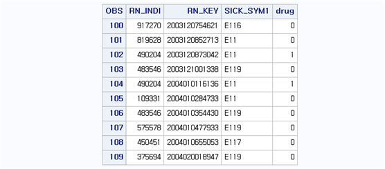
결과를 살펴보면 10개의 개체가 그대로 있으면서 DRUG 변수가 새로 생성되었다는 것을 알 수 있다. 이를 위해 먼저 BB.T30 데이터셋으로부터 분류코드(MCARE_DIV_CD) 변수를 이용해 주성분 코드 ‘107501ATB’이 쓰였으면 1 아니면 0의 값을 가지는 DRUG 변수를 생성하여 BB.T30_DRUG 데이터셋을 생성하였다. 이 데이터셋를 이용해 청구고유번호별로 DRUG이 1인지 0인지를 유일하게 나타내는 변수 DRUG을 다시 생성하였다. 이때 SQL Procedure와 GROUP BY 옵션을 이용하였으며, 청구고유번호별 축약은 MAX 함수를 이용하였다. BB.T30 데이터셋은 청구고유번호 내에 모든 처치사항이 들어가 있으므로 중복해서 결과가 나타난다면 이를 하나로 묶어 줄 필요가 있다. 이때 1 또는 0으로 표현되는 변수를 MAX 함수로 적용하면 1이 하나라도 있는 청구서는 1, 1이 하나도 없으면 0으로 표현된다. 이렇게 생성된 데이터셋을 BB.T30_DRUG1으로 두고 이후 LEFT JOIN을 이용하여 생성한 DRUG 변수를 BB.T20_SQL 데이터셋에 추가하였다. 이때 데이터셋 시정은 BB.T20_SQL은 A로 BB.T30_DRUG1은 B로 설정하고 [SELECT A.*, B.DRUG]를 통해 A의 모든 변수와 B의 DRUG 변수만 추가하였다. LEFT JOIN은 조건을 설정할 때 ‘ON’을 사용하며, 따라서 조건은 [ON A.RN_KEY=B.RN_KEY]으로 청구고유번호가 같은 경우를 의미한다.
위의 결과에서 DRUG 변수는 1또는 0의 값을 가지고 있다. 1이면 해당 청구서에 주성분 코드 ‘107501ATB’이 쓰였다는 것을 의미하며 0이면 쓰이지 않았다는 것을 의미한다. 이때 가져오는 데이터셋이 기준이 되는 데이터셋보다 개체가 많다 하더라도, 매칭되는 개체에만 정보가 생성되며 만약 가져오는 데이터셋의 개체가 기준이 되는 데이터셋보다 적다면, 매칭될 정보가 부족하기 때문에 그러한 경우에는 결측으로 결과가 표시된다. 또한, LEFT JOIN을 이용할 때도 가져오는 데이터셋에 기준변수가 중복으로 존재한다면 그 정보를 그대로 다 활용하게 된다. 따라서 변수를 붙일 때 기준변수를 기준으로 유일한 값을 생성하지 않는다면 데이터셋이 결합할 때 MERGE 문과 마찬가지로 중복 정보가 발생할 수 있으니 조심해야 한다.
9.4 MACRO
SAS MACRO는 동일한 작업과정을 여러 번 반복하는 경우, 특히 동일한 작업의 코딩이 매우 길고 그 작업을 여러 조건에서 해야 할 때 사용자가 함수를 만들어서 편하게 사용할 수 있는 방법을 의미한다. MACRO를 설정 및 사용하기 위한 기본 형식은 다음과 같다.
%MACRO 매크로이름 (인수1, 인수2, ...);
실행문
%MEND 매크로이름;
%매크로이름(인수1, 인수2, ...);MACRO는 %MACRO로 시작하고 %MEND로 끝을 낸다. 즉, %MACRO와 %MEND 사이에 나타나는 실행문이 실제 수행되는 내용이며, 매크로이름은 사용자가 임의로 설정한다. 이때 실행문이 실행될 때 바뀌는 조건을 ‘인수1, 인수2…’ 와 같이 설정하여 실행문에서 이러한 인수들을 활용할 수 있게 반영해야 한다. MACRO를 실행할때는 [%매크로이름(인수1, 인수2,…);]와 같은 형태로 실행한다.
BB.T20 데이터셋에서 주 상병 또는 부 상병이 ‘특정’ 상병을 가지고 있는지를 나타내는 변수를 생성해보자. 그다음 환자 단위로 이 변수를 축약하고, 마찬가지로 환자 단위로 심결요양급여비용총액을 합산하여 총합을 구한 다음 ‘특정’ 데이터셋으로 생성시킨다고 가정해보자. 이때 ‘특정’ 해야하는 정보는 MACRO 인수로 설정하면 된다. 다시 말해서 정보를 바꾸어 가면서 동일한 작업을 해야 하는 경우에는 MACRO의 인수로 설정하여 원하는 정보만 바꾸어서 동일한 작업이 가능하다. 이를 위한 프로그램은 다음과 같다.
%macro aa (a, b);
data temp;
set bb.t20;
if substr(sick_sym1,1,3)=&a or substr(sick_sym2,1,3)=&a then disease=1; else disease=0;
run;
proc sql;
create table &b as
select distinct rn_indi, max(disease) as disease, sum(ed_rc_tot_amt) as totalcost
from temp
group by rn_indi;
quit;
%mend aa;
%aa('E11', bb.macro);
proc print data=bb.macro (obs=10); run;프로그램을 살펴보면 첫 번째 단계로 BB.T20 데이터셋에서 주상병 또는 부상병을 3자리로 표현했을 때 ‘특정’ 상병이 존재하면 DISEASE 변수는 1, 아니면 0의 값을 가지도록 변수를 생성하였다. 이때 ‘특정’ 상병은 원하는 대로 값을 지정할 수 있게 ‘인수1’로 지정하였고 ‘인수1’의 이름을 간편하게 ‘A’로 설정하였다. 이때 인수로 설정된 ‘A’를 실행문 내에서 받아들일 때는 ‘&A’로 지정하면 된다. 이를 위해 [IF SUBSTR(SICK_SYM1,1,3)=&A or SUBSTR(SICK_SYM2,1,3)=&A THEN DISEASE=1; ESLE DISEASE=0;]로 명령문을 주었고 조건식을 살펴보면 주상병을 3자리로 했을 때 그 값이 ‘&A’ 즉, ‘A’ 인수 값이거나 또는 부상병이 ‘A’ 인수 값이면 DISEASE=1로 표현된다. 두 번째 단계에서는 개인고유번호(RN_INDI) 별로 값을 축약하는데 이때 DISEASE는 MAX를 이용해 0 또는 1의 값으로 표현하고, 심결요양급여비용총액은 SUM 함수를 이용해 합산을 한 다음 TOTALCOST로 이름을 변경하였다. 이때 생성되는 데이터셋 이름을 ‘특정’ 하기위해 인수 ‘B’로 설정하여 [CREATE TABLE &B AS]로 지정하였다. 따라서 두 번째 인수인 ‘B’ 값을 사용자가 마음대로 지정하여 데이터셋 이름을 설정할 수 있다. 이러한 과정을 MACRO로 생성하기 위해 %MACRO로 시작을 하고 이때 MACRO 이름을 ‘AA’로 간단하게 명명하였다. 또한, 특정되는 상병과 데이터셋 이름을 인수 ‘A’ 와 ‘B’로 두었기 때문에 매크로 시작문장은 [%MACRO AA (A, B);]와 같이 두면 된다. MACRO이 마지막 문장은 항상 %MEND와 MACRO 이름을 이용하여 [%MEND AA;]와 같이 끝을 내면 된다. 이렇게 설정된 MACRO는 MACRO 이름과 설정된 인수를 이용하여 간단하게 실행할 수 있으며 여기서는 상병은 ‘E11’ 그리고 데이터셋 이름은 ‘BB.MACRO’로 설정하였다. 따라서 MACRO 실행문은 [%AA(‘E11’, BB.MACRO);]이다. 이때 MACRO 실행 시작은 항상 ‘%’를 붙여야 하며, 이후 상병 정보인 ‘E11’나 데이터셋 이름인 ‘BB.MACRO’만 다른 값으로 지정하면 동일한 작업을 편하게 실행할 수 있다. 마지막으로 MACRO 인수 값을 지정할 때 따로 처리되어 있지 않다면 문자값은 ‘ ’를 붙여야 하며 데이터셋 이름이나 변수 이름은 ‘’ 없이 사용한다.
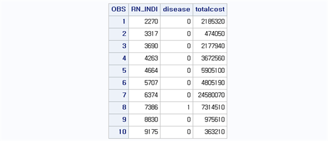